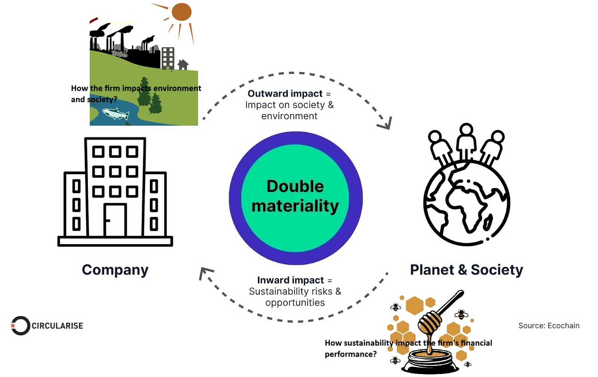
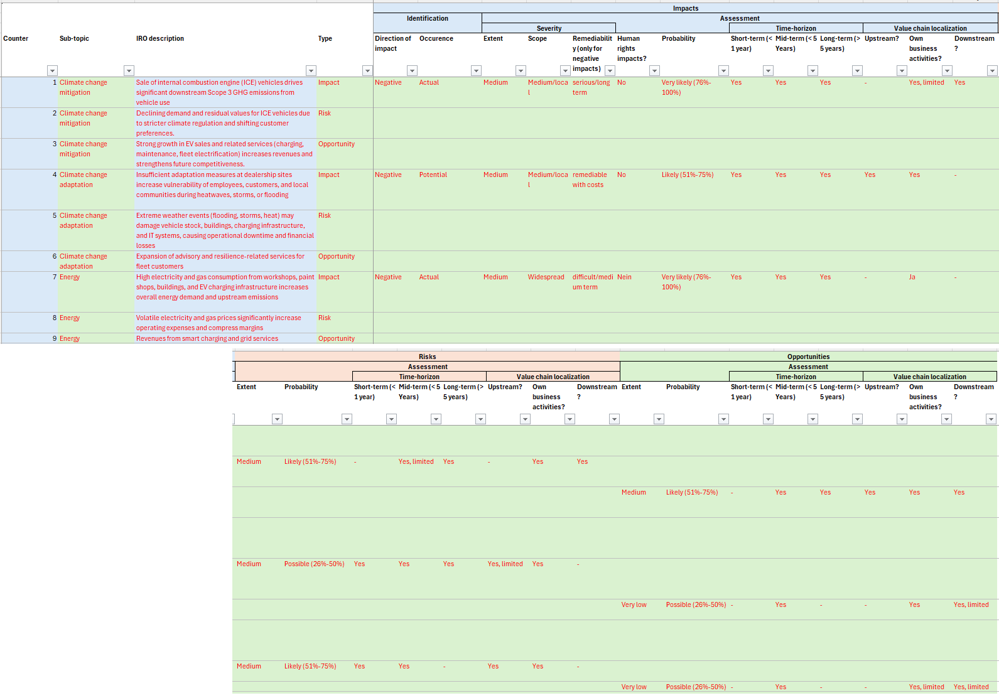
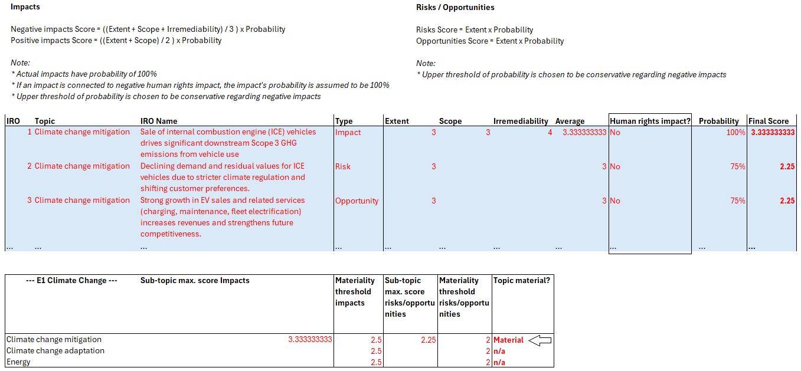

Double Materiality Assessment

In sustainability reporting, there is no universal procedure that applies equally to all economic activities. Under ESRS, companies must first identify potentially relevant sustainability topics and then assess their relevance through a double materiality assessment (DMA).
- How to report?: ESRS I defines the principles and methodology for conducting the DMA. Consider the depth of the assessment in accordance with ESRS I and DMA.
- What to report?: companies must disclose all general disclosure requirements under ESRS II and report topical disclosure requirements only for those topics identified as material. Do DMA and report its outcome (IRO) which activates the STANDARDS - disclosure requirements - in ESRS II.
In this process, the DMA acts as a filter that determines which sustainability topics are relevant and therefore require disclosure in accordance with ESRS II.
Case Study - DMA for a car dealer
AutoGroup GmbH are multi-brand car dealership groups. They are preparing for its first ESRS-com pliant sustainability report. Let’s support the preparation of a Double Materiality Assessment (DMA) in line with Disclosure Requirements in the ESRS II and with the EFRAG’s Materiality Analysis Implementation Guidance (MAIG).
AutoGroup GmbH operates 25 dealership sites across Germany, employs approximately 2,000 staff, and generates annual revenues of around €\(1.6 \times 10^9\). The company’s business model includes:
- New and used vehicle sales across multiple brands
- After-sales services, such as maintenance, repairs, bodywork, and paint shops
- Leasing and financing services for private and fleet customers
- The installation and operation of EV charging infrastructure
- Management of fleet services for corporate clients.
We suggest using the MAIG as a template for the process and get to work directly.
[A]. Phase 1 – Context analysis
It gives an overview of
- firm’s activities, location, products
- value chain (up/downstream interactions - supplier, firm, logistics, distributors, customers)
- stakeholder (those influenced by decision)
- others (regulatory landscape, industry analysis (checking partner firms), etc.)
According to the MAIG, AutoGroup GmbH should first prepare a context analysis. Key aspects of this analysis cover the firm’s activities and environment, the key stakeholders and the firm’s value chain.
(a) Activity analysis:
topic_1: strategy and business environment of the firm- The firm’s strategy focuses on maintaining a broad customer base, expanding electric-mobility services, and improving operational efficiency. The firm aims to strengthen its after-sales business, develop digital sales and service channels, and invest in EV-related capabilities such as charging infrastructure and high-voltage technician training. Sustainability and regulatory compliance are becoming increasingly integrated into strategic planning. The business environment is shaped by strong regulatory pressure (e.g., EU climate rules, environmental and safety regulations), the transition to electric vehicles, ongoing digitalisation of sales and workshop processes, competitive pressure from other dealerships and OEM-controlled sales channels, and a tight labour market for skilled mechanics. These trends create both risks (e.g., compliance costs, changing revenue mix) and opportunities (e.g., EV service growth, efficiency improvements).
topic_2: product/service portfolio of the firm- The firm offers a broad portfolio of automotive products and services. Its core activities include the sale of new and used vehicles across multiple brands, complemented by financing and leasing options for private customers and corporate fleets. The firm also provides trade-ins, vehicle delivery services, and tailored mobility solutions for business clients. A significant share of revenues comes from after-sales services, including maintenance, repairs, diagnostics, bodywork, and paint shop operations. The company is expanding its portfolio to include electric-mobility services such as EV charging infrastructure, battery diagnostics, and high-voltage system repairs. Additional services include spare parts sales, fleet management, and customer support across the vehicle life cycle, making AutoGroup GmbH a full-service mobility provider.
topic_3: geographic locations- The firm operates primarily in Germany, with a network of approximately 25 dealership and service locations distributed across several metropolitan and regional areas. These sites include showrooms, workshops, body shops, and administrative offices. While its core activities are domestic, the company interacts with international supply chains through vehicle manufacturers and parts suppliers. Its customer base is predominantly local and regional, with operations focused on serving private customers, corporate fleets, and mobility partners within Germany.
(b) Value chain analysis:
topic_1: Which stages of the value chain does the company control directly? Which are outsourced or partner-driven?- The following are directly controlled
- Vehicle Sales: AutoGroup manages all new and used car retail activities at its own dealerships.
- After-Sales Services: Workshops, inspections, diagnostics, and repairs are conducted by company employees on-site.
- Body & Paint Operations: The company runs its own paint booths and bodywork facilities, handling associated processes internally.
- Customer Service Processes: Customer interaction, consultation, and complaint handling are controlled directly.
- The following are outsourced / partner-driven
- Vehicle Manufacturing: All production is handled by OEMs, outside the company’s control.
- Parts Supply & Logistics: OEMs and logistics partners manage upstream transport and inventory flows.
- Financing & Leasing Services: Financial products are provided through banks or OEM financing units.
- Waste Disposal & Specialized Training: Hazardous waste contractors and external trainers deliver required services
- The following are directly controlled
topic_2: main inputs (vehicles, parts, energy, water, data, labor)?- Vehicles & Parts: OEM-supplied cars and components form the foundation of the company’s sales and service business.
- Skilled Labor: Mechanics, technicians, and sales staff are essential for both retail and workshop operations.
- Energy & Water: Workshops, paint operations, and charging infrastructure rely heavily on electricity, heating, and water.
- Chemicals & Data Systems: Paints, solvents, lubricants, and digital diagnostic data support core workshop processes.
topic_3: main outputs (products, services, waste, emissions)?- Vehicle Sales: New and used vehicles sold to private and corporate customers generate primary revenue.
- Service Outputs: Repairs, maintenance, diagnostics, and bodywork services support ongoing customer needs.
- Waste Streams: Workshops produce hazardous and non-hazardous wastes such as oils, chemicals, and tires.
- Emissions & Energy Use Outcomes: Heating, electricity consumption, and workshop activities create operational emissions.
topic_4: geographic boundaries (Germany-only? EU imports? cross-border leasing)- Domestic Operations: All dealership and workshop activities take place within Germany.
- International Supply Chains: Vehicles and parts originate from EU and global OEM manufacturing locations.
- Cross-Border Dependencies: The company interacts with international financing or logistics partners even though operations are local.
- Customer Market Boundaries: Sales and services focus exclusively on customers within Germany.
(c) Stakeholder analysis & evaluation:
topic_1: Who are the key stakeholders?- Customers (Private and Corporate)
- Employees and Apprentices
- OEMs and Suppliers
- Regulators and Local Authorities
topic_2: **Relevance** 1. Interest- Customers (Private and Corporate): high-quality servicing, transparent pricing, and trustworthy customer support
- Employees and Apprentices: fair working conditions, safe workplaces, competitive pay, and opportunities for training and development
- OEMs and Suppliers: dealerships to meet brand standards, maintain sales volumes
- Regulators and Local Authorities: full compliance with environmental, safety, and consumer protection regulations across all sites
topic_3: **Relevance** 2. Influence- Customers (Private and Corporate): shaping revenue and service demand
- Employees and Apprentices: shaping service quality and customer satisfaction
- OEMs and Suppliers: shaping product supply, technology development
- Regulators and Local Authorities: imposing operational requirements
- The stakeholder evaluation is performed to identify the
Relevanceof stakeholder group. - The relevance is determined by the highest value offered for the interest & influence.- The relevance is compared to the internal knowledge about the stakeholder. If the relevance exceeds the knowledge, it is translated into risk, and further engagement is required…via Survey, Interview, Workshop, SNS, etc.

[B]. Phase 2 – IRO identification
As a next step, the MAIG proposes the identification of IROs. As we expect that the E1 Standard might be material for the firm, we want to focus on potentially material IROs in this area first.
- (a) IRO identification approaches:
- In practice, there are different approaches for identifying IROs regarding the organizational levels.
Top-down: Derivation from the central level of the (Group) specialist department or the central sustainability task force. This approach provides a fast and potentially cost effective way to determine IROs, however it may miss out on feedback from subsidiaries.Bottom-up: Identification takes place at subordinate levels such as individual subsidiaries or business units with subsequent consolidation at the overall company/group level. This approach potentially offers the broadest spectrum of potential IROs. However, this may result in additional work at group level to aggregate results.Mixed approach: A combination of both approaches. This provides insights from both levels and may be useful in providing subsidiaries with initial anchors in terms of potentially relevant IROs. This approach likely is the most time-consuming and requires a lot of coordination.
- In practice, there are different approaches for identifying IROs regarding the organizational levels.
- (b) Sources to address E1 Standard:
E1. Sub topics:
- Climate Change Mitigation
- Climate Change Adaptation
- Energy
The firm shall consider the list in ESRS I AR.16 (2023 ESRS) or ESRS I Appendix A (2025 ESRS). When performing its materiality assessment, the undertaking shall consider this list of sustainability matters covered in the topical ESRS. When, as a result of the undertaking’s materiality assessment (see ESRS II IRO-1), a given sustainability matter in this list is assessed to be material, the undertaking shall report according to the corresponding Disclosure Requirements of the relevant topical ESRS.
E1.Climate Change Mitigation- Q. In how far do the firm’s (or its value chain’s) actions contribute (positively/negatively) to climate change?
- Negative impact: Sale of internal combustion engine (ICE) vehicles contributes significantly to downstream Scope 3 greenhouse gas emissions from vehicle use.
- Negative impact: Energy-intensive workshop, paint shop, and dealership operations generate operational (Scope 1 and 2) emissions.
- Positive impact: Sale of electric vehicles (EVs) supports the reduction of transport-related GHG emissions.
- Positive impact: Installation and operation of EV charging infrastructure enable the transition to low-emission mobility in the wider economy.
- Q. In how far is the firm (or ist value chain) affected by the transition to a low-carbon economy, considering potential financial benefits or risks?
- Transition risk: Decreasing demand and residual values for ICE vehicles due to stricter climate regulation and changing customer preferences.
- Regulatory risk: Increased costs from tighter emissions regulations, reporting obligations, and carbon pricing affecting operations and fleet services.
- Market risk: Potential loss of competitiveness if EV offerings, charging services, or low-carbon services lag behind competitors.
- Market opportunity: Growing demand for EVs can increase revenues from vehicle sales and related services.
- Business model opportunity: Expansion of EV charging infrastructure and e-mobility services for private and fleet customers.
- Financial opportunity: Access to green financing and sustainability-linked funding due to alignment with decarbonization objectives.
- Efficiency opportunity: Energy efficiency measures in dealerships and workshops can reduce operating costs and emissions simultaneously.
- Q. In how far do the firm’s (or its value chain’s) actions contribute (positively/negatively) to climate change?
E1.Climate Change Adaptation- Q. In how far does the firm (or its value chain) adapt to actual/potential impacts of climate change?
- Negative impact: Limited and uncoordinated adaptation measures at dealership sites may increase the vulnerability of employees, customers, and local communities during extreme heat, storms, or flooding events.
- Positive impact: Existing basic resilience measures (e.g., climate-controlled workshops, stormwater management, asset protection) contribute to reduced climate-related damage and operational disruption.
- Value chain impact: Disruptions at logistics partners, vehicle manufacturers, or fleet customers due to extreme weather can indirectly affect service continuity and customer reliability.
- Q. In how far is the firm (or ist value chain) affected by climate change effects, considering potential financial benefits or risks?
- Physical risk: Heatwaves may reduce employee productivity and increase health and safety risks in workshops and outdoor operations.
- Physical risk: Flooding, storms, or heavy rainfall may damage dealership buildings, vehicle stock, charging infrastructure, and IT systems, leading to financial losses.
- Operational risk: Climate-related disruptions at suppliers and transport partners may delay vehicle deliveries, spare parts availability, and fleet services.
- Financial risk: Rising insurance premiums or reduced insurability due to increased physical climate risks at exposed locations.
- Market opportunity: Growing demand for climate-resilient vehicles, fleet solutions, and related services due to more frequent extreme weather events.
- Operational opportunity: Proactive investment in climate-resilient infrastructure reduces downtime, repair costs, and business interruption losses.
- Service opportunity: Expansion of advisory and fleet management services focused on climate resilience and operational continuity.
- Reputational opportunity: Positioning as a reliable and resilient mobility partner for corporate and fleet customers under changing climate conditions.
- Q. In how far does the firm (or its value chain) adapt to actual/potential impacts of climate change?
E1.Energy- Q. In how far do the firm’s (or its value chain’s) actions contribute (positively/negatively) to the consumption of energy?
- Negative impact: High electricity and gas consumption from dealership buildings, workshops, paint shops, lighting, heating, IT systems, and charging infrastructure increases overall energy demand.
- Negative impact (value chain): Energy use associated with vehicle preparation, logistics, and outsourced service providers adds to indirect energy consumption.
- Positive impact: Implementation of energy-efficient equipment, building retrofits, and process optimization can reduce energy demand and related environmental pressures.
- Positive impact: Potential on-site renewable energy generation (e.g., rooftop PV) can reduce reliance on external energy supply.
- Q. In how far is the firm (or ist value chain) affected by its use of energy, considering potential financial benefits or risks?
- Cost risk: Exposure to volatile electricity and gas prices increases operating costs and reduces profit margins.
- Regulatory risk: Stricter energy efficiency standards and reporting requirements may lead to additional compliance and investment costs.
- Operational risk: Energy supply disruptions or grid constraints may affect workshop operations, IT systems, and EV charging availability.
- Transition-related risk: Increased pass-through of carbon costs in energy prices may further elevate energy expenses.
- Efficiency opportunity: Energy efficiency measures (LED lighting, efficient compressors, heat recovery, smart building systems) reduce long-term operating costs.
- Self-generation opportunity: Investment in on-site renewable energy (e.g., photovoltaic systems) lowers energy procurement costs and exposure to price volatility.
- Flexibility opportunity: Smart charging and load management for EV infrastructure enable demand-side flexibility and potential grid service revenues.
- Reputational opportunity: Demonstrating low and efficient energy use can strengthen the company’s sustainability profile with customers, OEM partners, and financiers.
- Q. In how far do the firm’s (or its value chain’s) actions contribute (positively/negatively) to the consumption of energy?

[C]. Phase 3 – IRO Assessment
Equipped with a list of relevant IROs, let’s set up to assess their materiality.
Severity: Size of environmental effect (harm).
Extent: Size of financial effect (money).
Scope(moral dimension): How many people / How much environment is affected.
Irremediability(moral dimension): How reversible the harm is.
\(P(\text{Occurance}_i)\): probability the impact/risk/opportunity materialises.
(a) formulas used to calculate Impact Materiality scores (for Impact): \[ \begin{aligned} \text{SCORE}_{I} = \text{Severity}_i &\times P(\text{Occurance}_i) \quad \text{with }P(\text{Occurance}_i)=1 \; \text{always for human right, } \\ & \text{where }\; \text{Severity}_i = \begin{cases} \dfrac{1}{2}\bigl(\text{Extent}_i + \text{Scope}_i\bigr), & \text{if impact } i \text{ is positive}, \\[8pt] \dfrac{1}{3}\bigl(\text{Extent}_i + \text{Scope}_i + \text{Irremediability}_i\bigr), & \text{if impact } i \text{ is negative}. \end{cases} \end{aligned} \]
(b) formulas used to calculate Financial Materiality scores (for Risk/Opportunity): \[ \begin{aligned} \text{SCORE}_{R /O} = \text{Extent}_i &\times P(\text{Occurance}_i) \\ & \text{where }\; \text{Extent}_i = \begin{cases} \frac{\text{€ impact}}{\text{firm size}}, & \text{ how much money is at stake / how big the firm is}... \\[8pt] \frac{\text{E[Financial impact]}}{\text{Reference Financial KPI}} & \text{} \end{cases} \end{aligned} \] Why Extent is expressed as a ratio? A certain loss can be huge for a small firm, and tiny for a large firm. So we scale the impact.
- numerator:
E[Financial impact]includes:- Expected revenue loss
- Cost increase
- Asset impairment
- Regulatory fines
- denominator:
Reference Financial KPI(the firm’s relevant financial scale). Different risks hit different parts of the financial statements, so the denominator must match the economic channel of the risk. This includes:- Revenue
- Operating profit
- Asset values
- Equity (shareholders’ capital)
- numerator:

- How exactly is the threshold value - ranging from Extent: 1 to Extent: 5 - for risks/opportunities determined? it is sensible to adjust the thresholds according to the specific industry of the firm to adjust risks to the economic conditions of the business. In general, the following procedure has proved successful:
- If risk management system exists: Use of the existing monetary threshold (80%, significance level of 0.2) for consideration as an anchor for
medium(SCORE: 3) - Revenue 0.5% ~ 3.0% for
medium(SCORE: 3) - Operating profit 3% ~ 10% for
medium(SCORE: 3)
- If risk management system exists: Use of the existing monetary threshold (80%, significance level of 0.2) for consideration as an anchor for
Again, if possible, try to orientate yourself on existing risk management methods.
So which topical standard is material? - In Extent, Scope, Irremediability, if any of them reaches the maximum, it becomes automatically material. - In Extent, Scope, Irremediability, if any of them imples the human rights, it becomes automatically material. - Finally, An overall SCORE above 2.5 is material.

[D]. Phase 4 – Reporting Data
After completing the identification and assessment of IROs, we prepare the data for reporting. In general, the firm is required to disclose as below:
- In the final reporting step, the undertaking must disclose how the materiality assessment was carried out and what its outcomes are. This includes:
- A description of the process to identify and assess material impacts, risks and opportunities (ESRS II IRO-1),
- the material IROs identified and how they relate to the company’s strategy and business model (ESRS II SBM-3),
- A clear indication of which topical ESRS disclosure requirements are covered in the sustainability statement (ESRS II IRO-2).
- The undertaking must also explain how material information was determined, including the thresholds and criteria applied.
- In addition, the company must report how its administrative, management and supervisory bodies (AMB) are informed about and oversee material sustainability matters. This includes how the AMB considers material IROs in the company’s strategy and risk management and how these matters were addressed during the reporting period.
Bibliography
[1] EFRAG: Implementation Guidance 1 – Materiality Assessment (MAIG) - https://www.efrag.org/sites/default/files/sites/webpublishing/SiteAssets/IG%201%20Materiality%20Assessment_final.pdf.